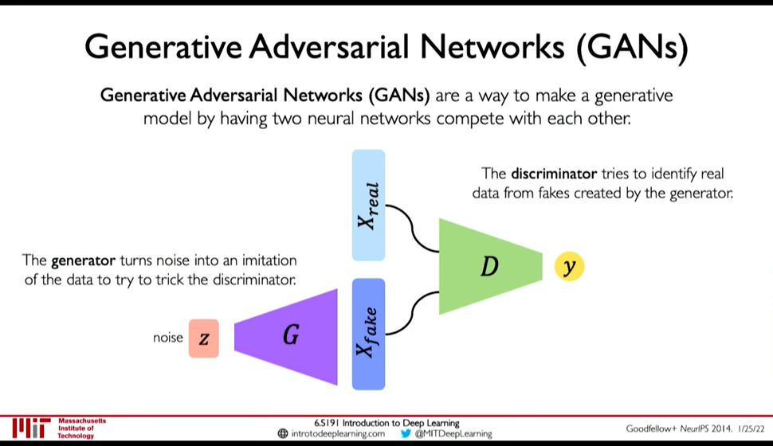
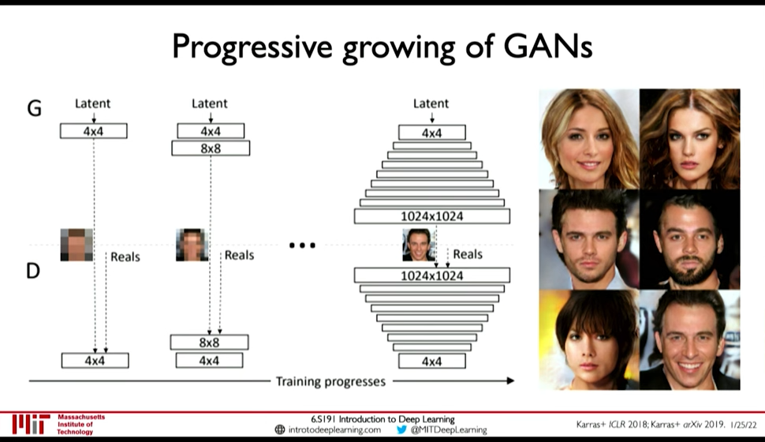
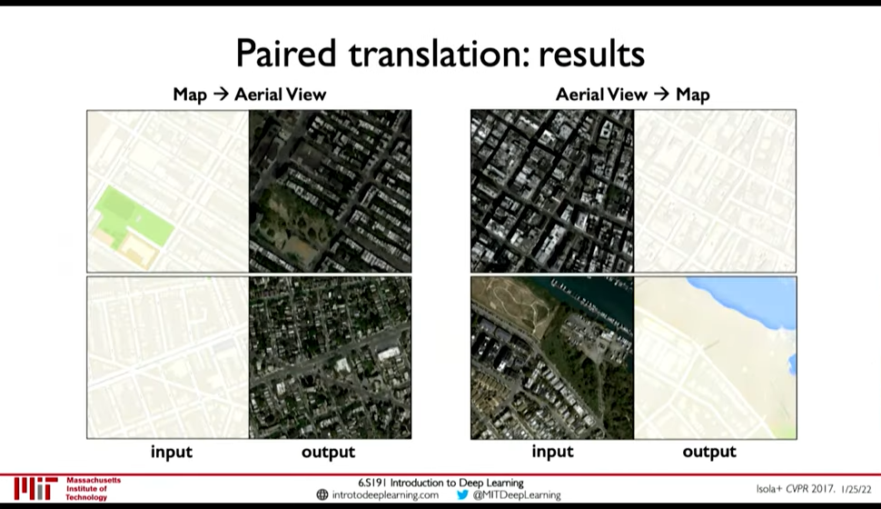
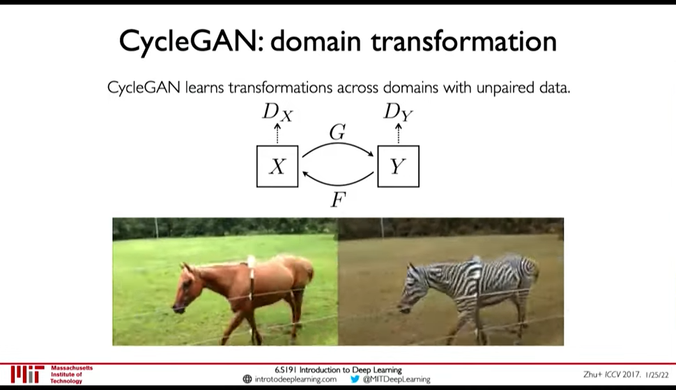

Generative Adversarial Networks
Table of Contents
0:35:07 Idea: We don't want to explicitly model density, and instead just sample to generate new instances.

Figure 1: GANs
- Generator generates data from noise
- Discriminator tries to separate between real and fake data
GANs avoid the problem of latent space regularization in AutoEncoders, because in some way the random noise \(z\) is itself the latent space, and it being within our control is both continuous and complete. If it wasn't complete the generator won't perform good on some input.
1. Training GANs
- Loss function is Adversial Objective
Discriminator (\(D\)) tries to maximize how well it can discriminate between fake \(G(z)\) data, and real data (\(x\))
\(\arg\max_D E_{z,x}[\log D(G(z)) + \log(1-D(x))]\)
- Generator (\(G\)) tries to fool the discriminator \(D\): \(\arg \min_G E_{z,x} [\log D(G(z))]\)
So, the overall objective is:
\(\arg \min_G \max_D E_{z,x} [ \log D(G(z)) + \log(1 - D(x))]\)
Ilya Sutskever says (Lex Fridman Podcast #94), GANs don't have cost function.
0:43:06 GANs are distribution transformers. The generator maps data from gaussain noise to a target distribution. 0:43:27 We can interpolate in noise distribution to interpolate in target distribution.
2. Progressive Growing

Figure 2: Progressive Growing
Add more layers as training progresses
- Speeds up training
- More stable training
3. StyleGAN(2): progressive growing + style transfer
4. Conditional GANs

Figure 3: Paired Translation an example of Conditional GANs
5. CycleGAN: domain transformation
CycleGAN emphasize the idea of GANs being distribution transformers.

Figure 4: CycleGAN: Transformation from one distribution to another distribution.
Footnotes:
Non reference formulation means that the comparision is done with implicit representation of image instead of direct comparision with pixels. This is in contrast to how Diffusion Models are trained. The implicit representation is the representation created by discriminator (i.e. the manifold created in discriminator of the natural images)